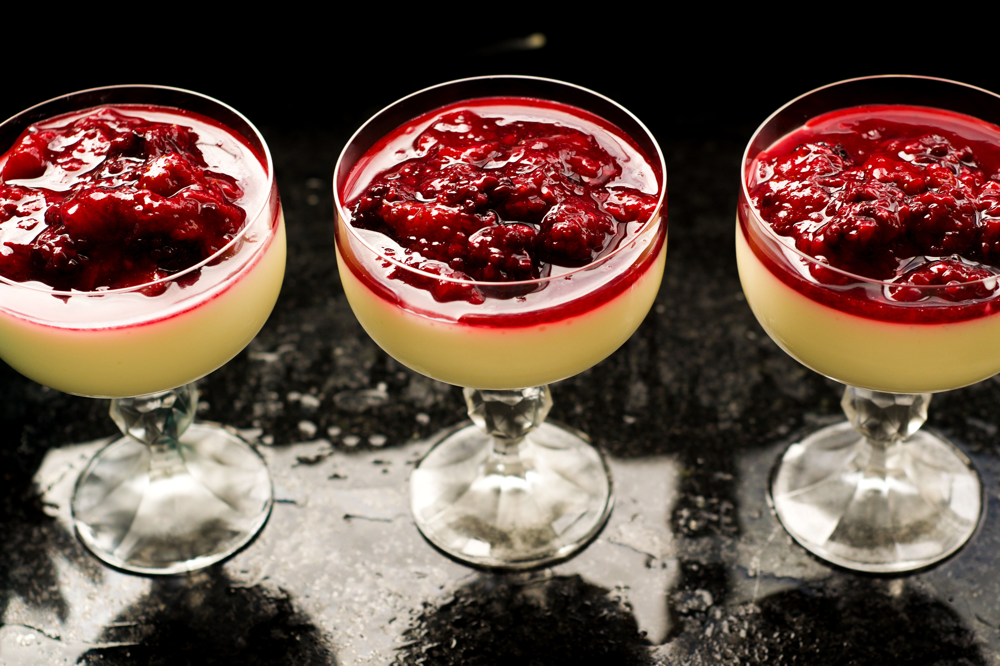

Panna Cotta
Kremalı İtalyan tatlısı olarak bilinen panna cotta, jelatinin kalınlaştırılmış haliyle hazırlanır. Ana malzemeleri jelatin ve krema olan panna cotta, yalnızca 5 malzeme ile kısa sürede hazırlanır. İsteğe göre kivi, ananas, çilek gibi meyvelerle zenginleştirilebilir. Peki, panna cotta nasıl yapılır? Malzemeleriniz hazırsa, İtalyan usulü panna cotta tarifine geçebiliriz.

Kaç Kişilik
6 Kişilik
Hazırlama Süresi
10 Dakika
Pişirme Süresi
10 Dakika
Panna Cotta Tarifi İçin Malzemeler
1 tatlı kaşığı toz jelatin
Yarım çay bardağı süt
1.5 su bardağı krema
3 yemek kaşığı toz şeker
1 paket vanilya
Panna Cotta Nasıl Yapılır?
-
Küçük bir bardakta sütün üzerine jelatini ekleyip karıştırın ve 2-3 dakika bekleyin.
-
Sos tenceresinin içerisine krema ve toz şekeri alıp orta ateşte kaynamaya bırakın.
-
Küçük baloncuklar çıkmaya başlayınca jelatinli sütü yavaşça ekleyin. Vanilya ilave edip karıştırın.
-
Karışımı suyla ıslatılmış kalıplara paylaştırın. Oda sıcaklığına geldiğinde üzerini örterek buzdolabına alın. En az 2-3 saat bekletin.
-
Tatlının kalıplardan rahat çıkması için, servisten önce içi sıcak su dolu bir kasenin içine yerleştirin. Ters çevirip taze meyvelerle servis yapın. Afiyet olsun.